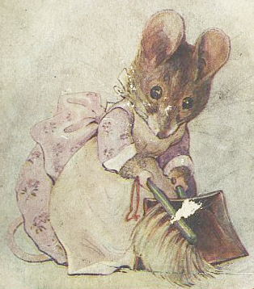
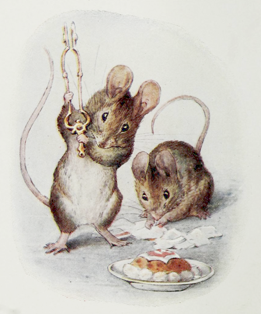
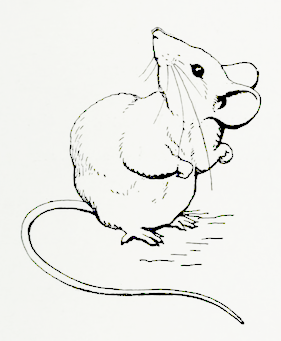
ドールハウスの もちぬしの おんなのこ Ｗ・Ｍ・Ｌ・Ｗに おくる
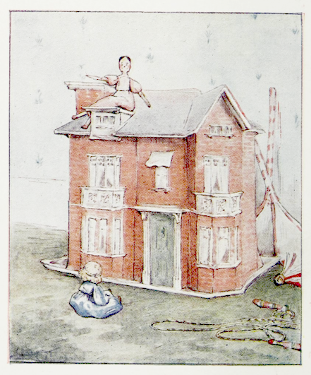
むかしむかし あるところに とっても すてきな ドールハウスが ありました。 あかい レンガに しろい まど、 ほんものの モスリンの カーテンと それから おもてには ドア、 やねには えんとつ。
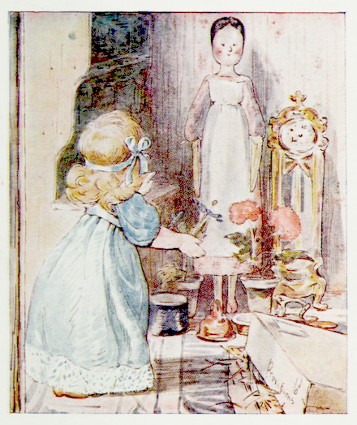
すんでいるのが おにんぎょうの ルシンダと ジェーン。 まあ いえの あるじは ルシンダなのですが、 えらそうに めし、 とは いいつけません。
ジェーンも おてつだいさんなのに、 やっぱり おりょうりしなくて、 いつも ディナーに でてくるのは できあいのもの、 おがくずいっぱいの はこで とどくのでした。

なかみは あかい ロブスター ２び、 ハム １ぽん、 おさかな １まい、 デザート ひとつ、 そのほか ナシと オレンジも いくつか。
みんな おさらと くっついていますが、 まったくの ごくじょうひんです。
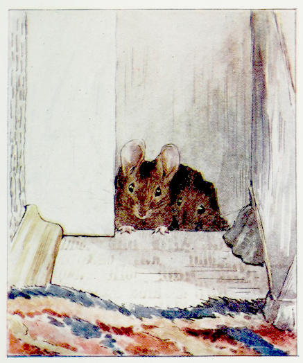
あるひの あさ、 ルシンダと ジェーンは ドールようの うばぐるまで ドライヴに でかけました。 こどもべやは ひともなく ひっそり。 ほどなく かさこそ がりがり かすかな ものおとが だんろそばの すみっこから。 ちょうど すそいたの したに あなが ありました。 おやゆびトムは ちょこっと あたまを つきだして そのあと ぴゅっと ひっこめます。
おやゆびトムは はつかねずみでした。
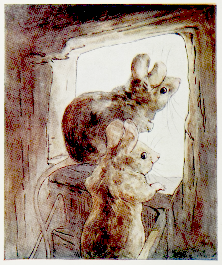
１ぷんご おなじく あたまを だす およめさんの もぐもぐハンカ。 こどもべやに だれも いないことを たしかめると、 おもいきって せきたんいれの したに しいてある オイルクロスに とびおります。
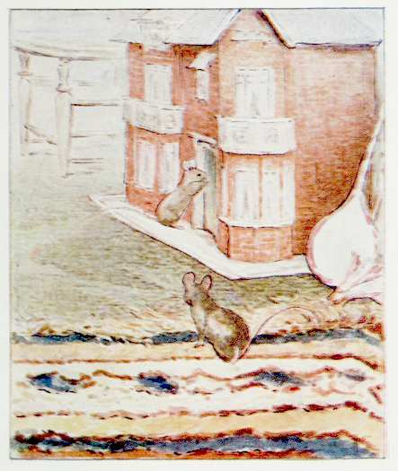
ドールハウスは だんろの むかいに ありました。 おやゆびトムは もぐもぐハンカと いっしょに こっそり だんろまえの しきものを こえて、 おもての ドアから おしいります ―― がらあきでした。
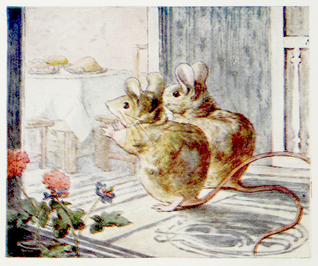
おやゆびトムと もぐもぐハンカは ２かいへ あがって しょくどうを のぞきます。 もう うれしくって チューッ！
なんとも すてきな ディナーが テーブルに ずらり！ すずの スプーンに なまりの ナイフと フォーク それから おにんぎょうようの イスが ふたつ ―― もう おあつらえむき！
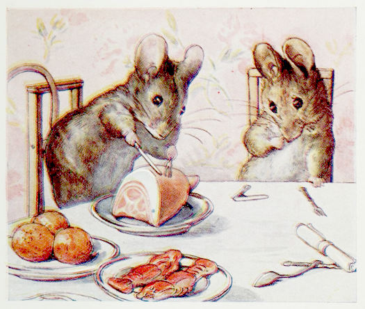
おやゆびトムは すぐさま ハムの きりわけに とりかかります。 きらきら きれいな きつねいろで あかの すじが さしていて。 ぐにゃりと まがる ナイフ、 手を いためてしまいます。 ゆびを くちに くわえて、
「ちゃんと ボイルしてねえな、 かてえぞ。 やってみっか、 もぐもぐハンカ？」
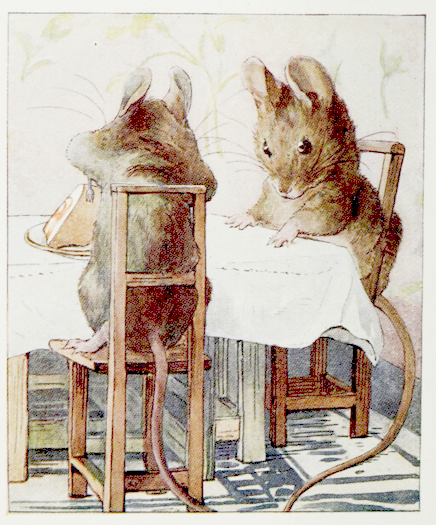
もぐもぐハンカは いすのうえに たって、 べつの なまりナイフで ハムを たたきます。
「このかたさ、 あのチーズやさんの ハムなみね。」と もぐもぐハンカ。

ハムが ばきっと さらから はがれて、 テーブルのしたに ころがりました。
「ほっとけ。」と おやゆびトム。「さかなを よこせ、 もぐもぐハンカ！」

もぐもぐハンカは すずのスプーンを ひとつずつ ためしましたが、 さかなは おさらに のりづけされたままです。
すると おやゆびトムは だいげきど。 ハムを ゆかの どまんなかに おくと、 ひばしや シャベルで めったうち ―― ばん、 ばん、 がしゃん ぐしゃん！
こなごなに とびちる ハム、 だって ものは つやつや いろが ぬってあるだけの ただの せっこうですからね！
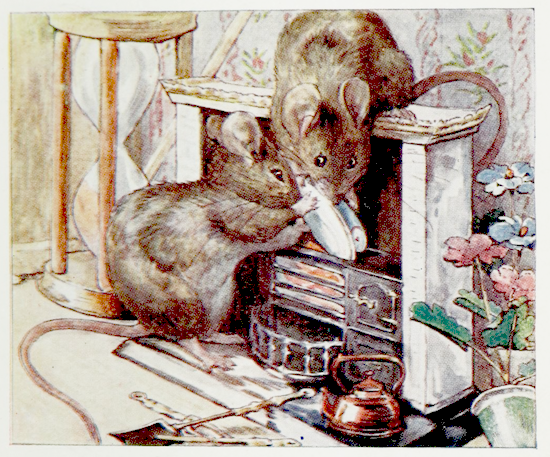
でも それでは おやゆびトムと もぐもぐハンカの いらだちと がっかりは おさまりません。 デザートを こわし、 さらには ロブスター、 ナシと オレンジまで。 さかなが どうしても さらから はずれないので、 くしゃくしゃ あかい かみが ついてる だいどころの ひもとに つっこみましたが、 もちろん もえるわけが なく。
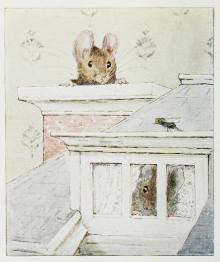
おやゆびトムは だいどころの えんとつを のぼって てっぺんから かおを だしますが ―― すすひとつ ありません。
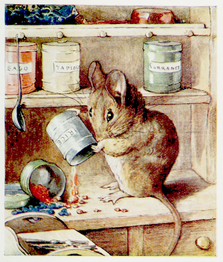
えんとつに あがった おやゆびトムを よそに、 もぐもぐハンカは また がっかり。 せいりだなに みつけたのは ちいさな かんの いれもの。 ラベルには ―― おこめ ―― コーヒー ―― でんぷん ―― でも ひっくりかえしたところで なかには あかや あおの ビーズが はいっているだけ。
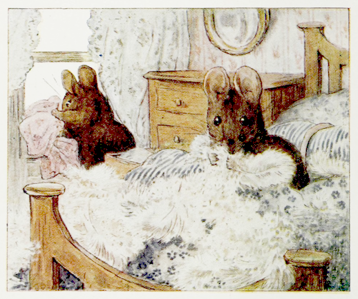
こうなったら ネズミたちも やりたいほうだい ―― おやゆびトムの ひどいことと いったら！ ジェーンの ねどこの たんすから ふくを ぬいては ２かいの まどから ほうりだすのです。
でも もぐもぐハンカは せつやくが いちばん。 ルシンダの まくらから うもうを はんぶん ぬきだしたところで、 ああ これは ほしかった うもうぶとんに できると おもいなおします。
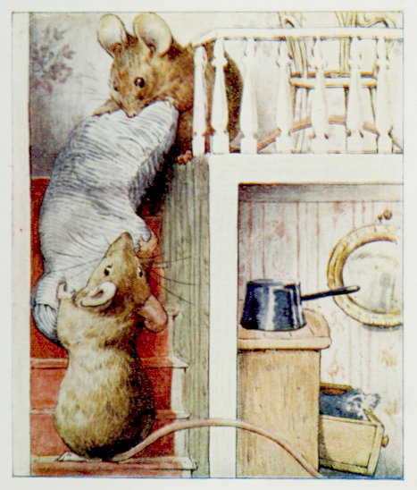
おやゆびトムの たすけを かりて、 まくらを １かいに はこび、 それから だんろまえまで。 まくらを ねずみあなに おしこむのは ひとくろうでしたが、 まあ なんとか できました。
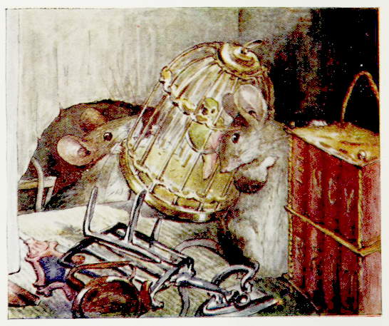
そのあと もぐもぐハンカが とってきたのが イスに ほんだな、 とりかごなど こまごましたものを あれこれ。 でも ほんだなと とりかごは ねずみあなを とおりません。
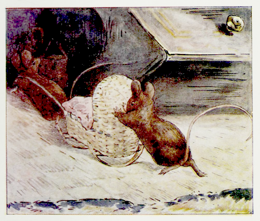
もぐもぐハンカも そのあたりのものは せきたんいれの うらに おいておくことにして、 こんどは ゆりかごを とってきました。
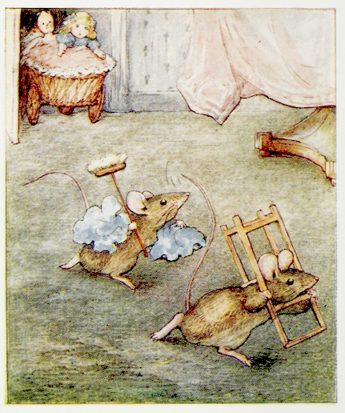
ちょうど もぐもぐハンカが もうひとつ イスを はこんでいた そのとき、 へやのそとの かいだんから きこえてくる はなしごえ。 ネズミたちが あなに とんでかえると、 おにんぎょうたちが こどもべやに かえってきました。
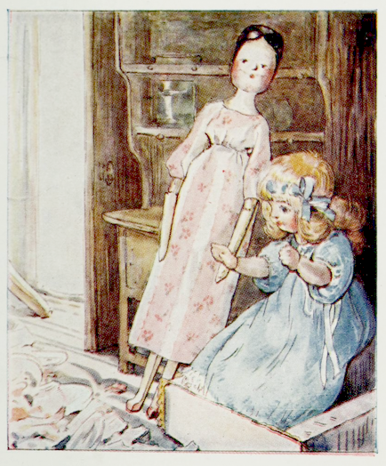
ジェーンと ルシンダの めに うつったのは、 なんという ありさま！ ルシンダは ひっくりかえった だいどころの ストーヴに こしを おろして、 めを まるくします。 ジェーンも だいどころの たなに よりかかって にがわらい ―― ふたりとも ものも いえません。
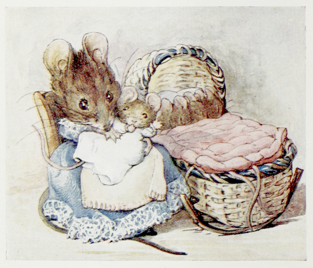
ほんだなと とりかごは せきたんいれの うらから もとに もどされましたが ―― もぐもぐハンカは ゆりかごと ルシンダの ふくを あれこれ せしめました。
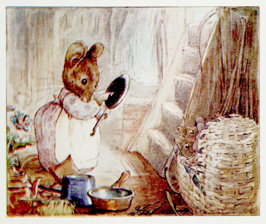
それに つかいがっての いい ポットや フライパン そのほか いろいろ てにいれたのです。
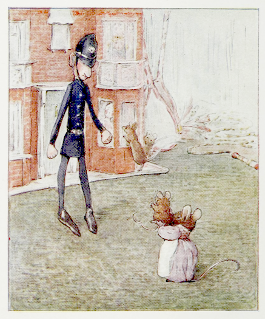
ドールハウスの もちぬしの おんなのこは いいました ――「おまわりさんの かっこうした おにんぎょうを すえなくちゃ！」
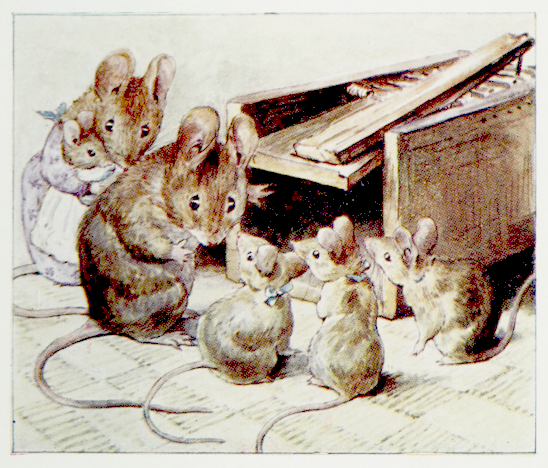
でも こもりの おてつだいさんは いいます ――「ネズミとりを しかけましょ！」
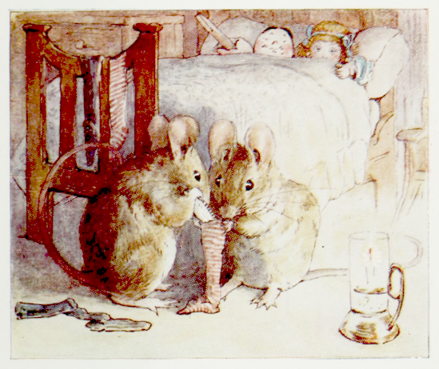
そんなわけで わるねずふたりぐみの はなしは これで おしまい ―― ですが ふたりは さいごまで ひどいひどい やつらだったわけで なく、 おやゆびトムは ちゃんと こわしたものの つぐないを しました。
だんろの しきものの したに、 ひんまがった はくどうかを １まい みつけたので、 クリスマスイヴに もぐもぐハンカと ふたりで それを ルシンダのか ジェーンのか とりあえず くつしたのところへ つめておいたのです。
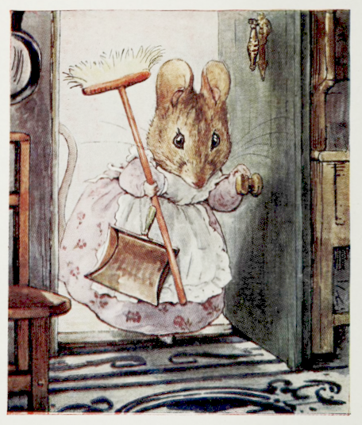
そして まいにち あさはやく ―― だれも おきないうちに ―― もぐもぐハンカは ちりとりと ほうきを もってきて ドールハウスの おそうじを するのでした。
（おしまい）